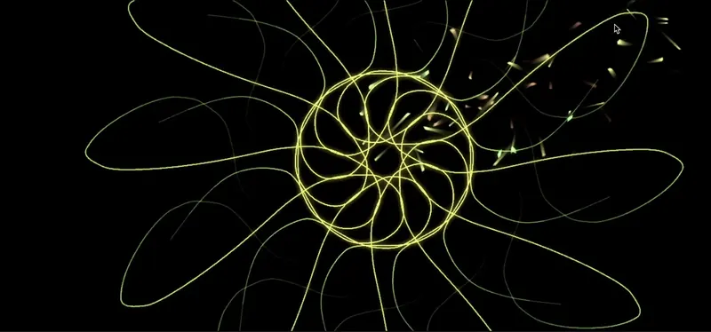

01 / What people reported
Some interviewees used music as a quiet bubble against traffic, crowds and noise. Learning an instrument, they said, takes years.
Interview insights, p. 12. Reported by participants, not a claim about all commuters.
ONE STEP. ONE SOUND. ONE SHARED COMPOSITION.
What if the rhythm of an ordinary commute could become music made together?
An experimental interaction-design project exploring how footsteps can become sound and evolving generative visuals, turning individual movement into a shared creative experience. The metro-station installation is a concept explored through prototyping; it has not been deployed.

City Orchestra was an independently developed interaction-design project. I led the research, concept development, interaction design, physical prototyping and generative visual exploration. Peers participated in testing, while my professor provided academic guidance and feedback.
What I noticed: in the interviews, music already shields people from a loud commute, but it stays something they listen to rather than make.
From listening to participation.
The interview insights describe music as a “quiet bubble” on noisy journeys, and making music as something that takes years of practice. That made me question something: could a movement people already make on the way to work, walking, invite them to take part? The metro installation I explored is a concept; it was never installed in a station.
Interview insights / PDF p. 12Interview categories and counts are reported on p. 9; unique-participant totals and detailed sampling are not independently documented.
Interviews, stakeholder mapping and empathy exercises pointed me toward a question about participation, not just better listening.
Some interviewees used music as a quiet bubble against traffic, crowds and noise. Learning an instrument, they said, takes years.
Listening gives a private escape. Making music could offer a different kind of involvement, without the long learning curve.
Could a movement commuters already make, walking, become a musical input?
I explored three ways of turning movement into music: a shadow, a shared floor and a projected reflection.
Use your silhouette to catch falling notes projected onto a wall.
Turn footsteps and movement through a shared space into collective music.
Explore guided musical learning through a responsive mirror and projection.
My how-might-we question asked how a commute could give people energy instead of just filling the silence (p. 18). City Orchestra answered it without asking anyone to learn an instrument or hold a screen: the step is the input, and strangers’ movements add up to one composition. It was also the direction I could carry into physical prototyping; the other two stayed as sketches.
From there I imagined an interactive floor in a metro station: a commuter walks, a note sounds, and a visual thread joins the threads of others.
A person steps onto the imagined interactive area. This is the intended trigger, not a recorded performance metric.
EXPLANATORY RECONSTRUCTIONI wanted a step to do something: trigger a sound and leave a visual trace. This is where the idea became physical, with a floor surface, a camera above it, and a laptop and Arduino behind it.
Building it let me try visual responses in a room and watch how people moved over a taped floor area. Detection weakened when people moved fast, so I framed the system for walking (p. 34).
Sensor specifications, wiring and the sound mapping are not documented here, and it was never installed in a station. These limits and the response to bolder shapes shaped the visual direction that follows.
Try the principle behind the proposed interaction
Activate a floor tile to explore how individual steps contribute to an evolving audiovisual composition.
Tap a tile to begin. Sound is off.
A browser simulation made for this page, not the physical prototype. It does not use the original hardware or code. Sound stays off until you switch it on.
I wanted to know what a footstep should look like, so I tried three visual languages: threads, organic shapes and radial geometry.
Symmetrical radial forms that build up around a fixed centre, so each step adds to one ordered figure. Unlike the other two, it has a clear structure.
Original stills from p. 31. The tabs are a new presentation device, not a live link to the tracking software.
Participants viewed different generative responses in a real room. Four steps: what was tested, what people experienced, what the experiments suggested, and what stayed unresolved.
I tried several visualizations with peers indoors, in a taped floor area facing a screen, using webcam tracking of their feet (p. 32). The documentation has no sample size, task scores or measurements, so I treat the testing as qualitative.
Two original recordings show peers walking in the marked area while the display responds. They show the setting and the interaction; they are not measurements of sensing accuracy or preference.
Session 01 (0:48): a participant with long hair stands facing a television on a white cabinet, which shows a pink particle-like generative display. Session 02 (0:08): a participant walks across a floor area marked with blue tape, with the same screen in view. Watch how the display responds as the participant crosses the taped area. The recordings have no sound, so no captions are needed.
Three of the original photographs. The rest are in the archive below.
The documented feedback favored the structured geometric / mandala direction over the dense threads, so I replaced thin threads with bolder mandala forms to improve visibility and tracking stability (p. 34). It is a reported preference, not validated performance.
Expressive, but visually dense.
Structured, symmetrical, easier to read.
Detection dropped when people ran, so I framed the system for walking. The source PDF also contains approval percentages and an accuracy figure without a sample size or method; I do not use them as results. Further validation would need a recorded method, a stated sample and testing outside a controlled room. The source PDF stays available for transparency.
The original documentation also links to a testing materials folder; its contents have not been independently reviewed.
City Orchestra made me think differently about interaction design. I began by exploring how movement could become a creative input, but building and testing the prototype made me consider the experience beyond the visual output: how someone discovers the interaction, understands the response and becomes part of it.
Walking was already part of every commute, and the interviews suggested people wanted to make music, not only listen. A step needed no instrument and no screen.
A physical prototype exposed tracking that weakens when people move fast, and visuals that must read clearly at a glance (p. 34). It also showed me how much a claim depends on a documented method, which is why the percentages stay out of this page.
Peers’ documented feedback favored bolder, more ordered visuals, and the walking-only limit became clear when people moved faster. These are qualitative impressions, not validated results. My professor’s guidance and critique accompanied this work.
Document the input-to-sound mapping, improve tracking at higher speeds, make the response to each step easier to discover, and repeat the testing with a recorded method, then in a semi-public space with accessibility and safety in mind.